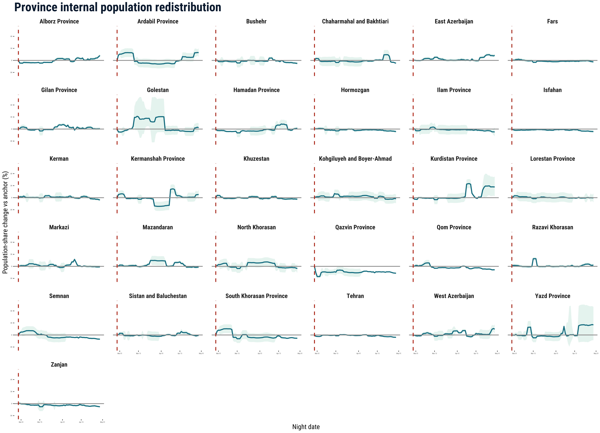
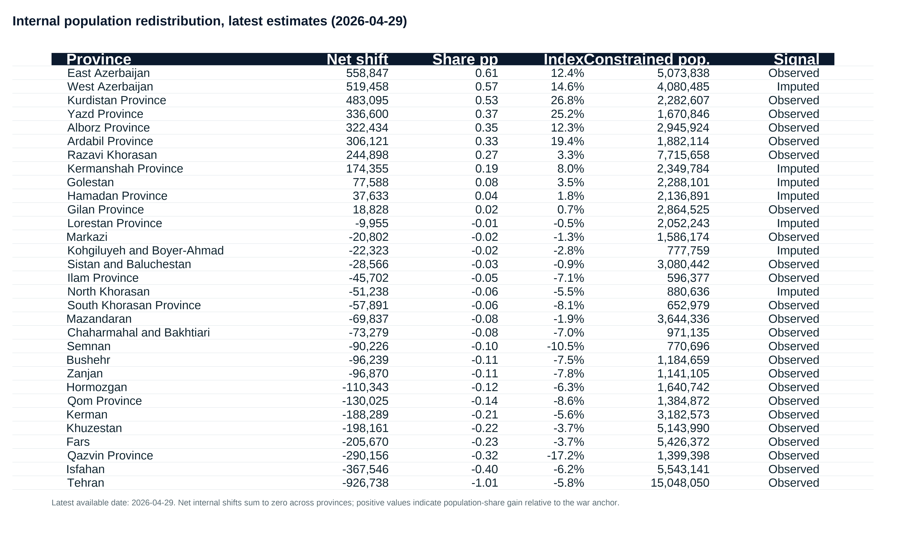

Iran conflict and population redistribution
A Closeread prototype adapted from the situation report


Iran conflict and population redistribution
- 31 provinces
- 61 days analysed
- Updated 29 Apr 2026
What is this story about?
This interactive story updates the situation report methodology and condenses the analysis into a smaller set of visuals. It focuses on the internal redistribution indicators derived from Cloudflare-based estimates of relative population presence, and on Farsi Wikipedia pageviews used as a contextual validation signal.
The aim is modest. These graphics do not estimate exact numbers of displaced people or observe origin-destination flows directly. They show where the strongest relative shifts in population presence appear, how those shifts evolve through time, and whether another digital trace points toward similar geography and timing.
- Cloudflare HTTPS request data provide the primary proxy for provincial relative presence.
- The reporting estimate constrains provincial shares to a national population control and converts share changes into zero-sum internal redistribution indicators.
- Wikipedia maps and time series serve as contextual validation, not as a second population estimator.
How should these graphics be read?
Cloudflare publishes aggregated, anonymised counts of encrypted web requests passing through its network. In this workflow, night-time provincial traffic is calibrated against WorldPop 2025 baseline population for December 2025 and then applied after the start of the war on 28 February 2026. The unconstrained relative-presence signal remains a diagnostic measure of Internet-derived presence, while the reporting estimate completes the ADM1-date panel, smooths provincial shares, and applies a national population control informed by external mobility evidence.
The internal redistribution index is the main reporting measure. It captures how much each province’s share of the constrained national population estimate has changed relative to the war anchor. Positive values indicate population-share gain relative to other provinces; negative values indicate population-share loss relative to other provinces. Both can still be shaped by Internet connectivity, power cuts, routing disruptions and uneven observability, so persistent patterns and alignment with external signals matter more than any single date.
What does the internal redistribution index show?
The redistribution maps ask a narrower question: which provinces gained or lost population share relative to the war-anchor distribution? This is the clearest way to separate internal redistribution from national-level change in the country control.
The time series show whether those share changes persist, consolidate, or reverse. Sustained positive values are more plausible concentration signals, while sustained negative values are more plausible out-movement or relative-loss signals.
The latest table translates the share shifts into people-equivalent net internal redistribution. These values sum to zero nationally each day, so they should be read as a scale indicator for redistribution rather than as observed counts of movers.



What do Wikipedia pageviews add to the story?
The Wikipedia material is not asked to do the same job as Cloudflare. Farsi pageviews for border and border-town articles are used to check whether another digital trace points toward similar geography of conflict attention and movement pressure.
Alignment across sources strengthens confidence in the interpretation. It does not provide a causal estimate or prove movement on its own, but it makes the spatial reading more persuasive than a single-source claim.
The time series adds a timing check. If pageview attention rises around the same phase in which the redistribution signal shifts most strongly, that supports a shared interpretation of disruption and reorientation.
The limits remain important: counts are small, the signal is partial, and Farsi Wikipedia traffic can include users outside Iran. Its value is contextual and directional.


What should readers know before interpreting the estimates?
Internet shutdowns do not make the signal disappear, but they do bias it.
Cloudflare data capture observable HTTPS request activity, not people directly. Blackouts, power cuts and routing disruption can suppress traffic where people remain physically present, while better-connected users, institutions or wealthier urban households may stay more visible.
The method reduces this problem without eliminating it.
The analysis uses province shares rather than raw national traffic, focuses on night-time activity, calibrates against a pre-war baseline, applies observability adjustments and gives more weight to patterns that persist and align with independent evidence.
The estimates describe relative internet-observable presence.
They are not raw flows, individual movements, unique users or absolute population counts. Positive values may indicate relative in-movement or more stable connectivity; negative values may indicate relative out-movement or local network shocks.
Wikipedia is a directional attention signal.
Farsi Wikipedia pageviews help test whether attention to borders and routes changes in ways that are consistent with the Cloudflare-derived geography. They are small, partial and may include users outside Iran, so they are not used to estimate displacement directly.
What should readers take away?
This revised story keeps the interpretation close to the figures that carry the most weight and separates diagnostics from reporting estimates.
- The internal redistribution maps, time series and latest table are the core evidence for province-level share shifts.
- The FAQ material clarifies why the estimates should be read as internet-observable, relative and triangulated evidence.
- The results remain proxy evidence and should be read as structured signals, not exact counts or direct flows.
References
Francisco Rowe, Carmen Cabrera, Elisabetta Pietrostefani. 2026. “Where Iranians are going under fire. A real-time picture of displacement.” The Conversation, May 5, 2026. https://doi.org/10.64628/AB.wxcpd6kxg
Francisco Rowe, Carmen Cabrera, Elisabetta Pietrostefani, Matt Mason, Rodgers Iradukunda, Andrea Nasuto, and Emiliano Beltran. 2026. “Situation Report: Iran Conflict Digital Trace Data Analysis - Experimental (Reporting period: 28th of February 2026 to 19th of March 2026).” Geographic Data Science Lab, University of Liverpool, March 26, 2026. ReliefWeb: https://reliefweb.int/report/iran-islamic-republic/situation-report-iran-conflict-digital-trace-data-analysis-experimental-reporting-period-28th-february-2026-19th-march-2026. OSF preprint: https://doi.org/10.31235/osf.io/4s7ve_v1